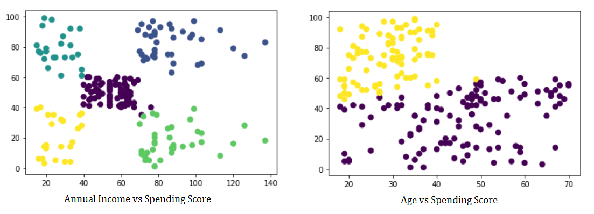

Ndcharles Nweke
Data Science & Analytics | IT Operations
A data generalist with experience in IT operations, and everything business automations. My interest is in real-life applications of data to business and everyday problems.
Let's Connect
LinkedIn | Twitter | Blog |
View my Resume
Customer Segmentation
Customer segmentation is the practice of dividing a company’s customers into groups that reflect similarity among customers in each group. The goal of segmenting customers is to decide how to relate to customers in each segment in order to maximize the value of each customer to the business.
The purpose of this project is to develop a clustering algorithm to help a supermarket owner create target groups for his customers. This would help him know what age to target which product. As well as what kind of offers to use on which customers during his marketing runs. This is an unsupervised learning problem hence we used Kmeans clustering to segment the customers and provide Mr Ken with the Target Customers.
Method
A dataset with 200 instances was provided. EDA was performed to understand the relationship bewteen the attributes. Given it’s a clustering problem, KMeans was used. Other models viz SpectralClustering and GaussianMixture were also used to validate our model’s output. StandardScaler was used to normalize our data and silhouette_score to determine the models performance.
Discussions
The EDA results shows that customers between the ages 18 to 40 have the highest purchasing power in the store. Also, the highest spending score is between 40 to 60 (the region is a representative of all the age groups). It also showed that, the higher the age, the lesser the annual income and spending score.

Scaling gave our model a poor performance so we tried clustering using other models (SpectralClustering and GaussianMixtures), with and without scaling and they all turned out better without scaling. The best of our model thus came without the scaling component. The annual income vs spending score clustering gave a silhouette_score of 0.44 while the age vs spending score model gave a silhouette_score is 0.29.
[View my GitHub profile] | [Read the Blog]